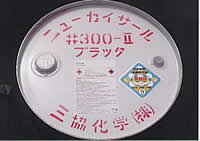

| 社名 |
三協化学株式会社 |
| 代表者名 |
代表取締役 芹沢 俊夫 |
| 所在地 |
〒417-0826 静岡県富士市中里大坪新田2608-52 |
| 連絡先 |
TEL：0545-32-0128 FAX：0545-32-0129 |
| 担当者 |
芹沢 啓二 |
| ホームページアドレス |
|
| e-mailアドレス |
seriyaku@iris.ocn.ne.jp |
| 従業員数 |
４名 |
| 業種 |
漁網防汚剤、防汚塗料製造 |
 |
「捕る漁業、育てる漁業に」をテーマに弊社漁網防汚剤「ニューカイサール」は約３０年海と共に生きてきました。
「養殖用安全確認防汚剤-ニューカイサール 定置用安全確認防汚剤-ニューカイサール300Ⅱ」は漁業者の皆様にお役に立てる事と信じて居ります。 |
|